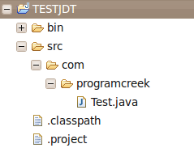

Eclipse JDT tutorial – Java Model – Create, Access, Load Projects
In this article, we are going to use Eclipse JDT to create, access and load projects. I assume that you know how to create a simple Eclipse plug-in project which adds a menu item that you can click and trigger some actions. If you don't know, you can go to this article. The reason why we need a plug-in project is that Java Model only work inside of a Plug-in, a standalone application will not support Java Model.
This article only focus on JDT Java Model. The following three topics will be explored:
- Create projects in workspace
- Access projects in workspace
- Dynamically import existing projects into workspace
Those are essentially important when you want to process a large number of Java projects.
1. Create projects
We can use Java Model to create a new project in the work space.
The following here requires the following dependencies:
import org.eclipse.core.resources.IFolder; import org.eclipse.core.resources.IProject; import org.eclipse.core.resources.IProjectDescription; import org.eclipse.core.resources.IWorkspaceRoot; import org.eclipse.core.resources.ResourcesPlugin; import org.eclipse.core.runtime.CoreException; import org.eclipse.jdt.core.IClasspathEntry; import org.eclipse.jdt.core.ICompilationUnit; import org.eclipse.jdt.core.IJavaProject; import org.eclipse.jdt.core.IPackageFragment; import org.eclipse.jdt.core.IPackageFragmentRoot; import org.eclipse.jdt.core.IType; import org.eclipse.jdt.core.JavaCore; import org.eclipse.jdt.core.JavaModelException; import org.eclipse.jdt.launching.JavaRuntime; |
Add code to run method. The code ignores the try/catch statements, Eclipse will ask you to add exception handling code.
// create a project with name "TESTJDT" IWorkspaceRoot root = ResourcesPlugin.getWorkspace().getRoot(); IProject project = root.getProject("TESTJDT"); project.create(null); project.open(null); //set the Java nature IProjectDescription description = project.getDescription(); description.setNatureIds(new String[] { JavaCore.NATURE_ID }); //create the project project.setDescription(description, null); IJavaProject javaProject = JavaCore.create(project); //set the build path IClasspathEntry[] buildPath = { JavaCore.newSourceEntry(project.getFullPath().append("src")), JavaRuntime.getDefaultJREContainerEntry() }; javaProject.setRawClasspath(buildPath, project.getFullPath().append( "bin"), null); //create folder by using resources package IFolder folder = project.getFolder("src"); folder.create(true, true, null); //Add folder to Java element IPackageFragmentRoot srcFolder = javaProject .getPackageFragmentRoot(folder); //create package fragment IPackageFragment fragment = srcFolder.createPackageFragment( "com.programcreek", true, null); //init code string and create compilation unit String str = "package com.programcreek;" + "\n" + "public class Test {" + "\n" + " private String name;" + "\n" + "}"; ICompilationUnit cu = fragment.createCompilationUnit("Test.java", str, false, null); //create a field IType type = cu.getType("Test"); type.createField("private String age;", null, true, null); |
When you trigger the action, the following project will be created.

2. Access projects
If there are already projects in our work space, we can use Java Model to loop through each of them.
public void run(IAction action) { // Get the root of the workspace IWorkspace workspace = ResourcesPlugin.getWorkspace(); IWorkspaceRoot root = workspace.getRoot(); // Get all projects in the workspace IProject[] projects = root.getProjects(); // Loop over all projects for (IProject project : projects) { System.out.println(project.getName()); } } |
If we import some projects or create some, and click the menu item we created, the projects names will show up as follows.
{kind=link}
3. Dynamically load/import existing projects into workspace
In the previous step, we need manually import existing projects to work space. If the number is larger, this would not be applicable.
Eclipse JDT provide functions to do this dynamically. Now let's see how to import a large number of existing projects into the work space. It does not copy files to the workspace root directory, but only point to the projects in the external directory. In the example, I use the flash drive to hold my open source projects. In this way, you can parse thousands of projects and get useful information you need without copying anything.
IWorkspaceRoot root= ResourcesPlugin.getWorkspace().getRoot(); final IWorkspace workspace = ResourcesPlugin.getWorkspace(); System.out.println("root" + root.getLocation().toOSString()); Runnable runnable = new Runnable() { public void run() { try { IPath projectDotProjectFile = new Path("/media/flashx/TestProjectImport" + "/.project"); IProjectDescription projectDescription = workspace.loadProjectDescription(projectDotProjectFile); IProject project = workspace.getRoot().getProject(projectDescription.getName()); JavaCapabilityConfigurationPage.createProject(project, projectDescription.getLocationURI(), null); //project.create(null); } catch (CoreException e) { e.printStackTrace(); } } }; // and now get the workbench to do the work final IWorkbench workbench = PlatformUI.getWorkbench(); workbench.getDisplay().syncExec(runnable); IProject[] projects = root.getProjects(); for(IProject project: projects){ System.out.println(project.getName()); } |
What if the project we want to load does not contain a .project file? This is the complicated case, we need dynamically create all those projects by using its source code.
Notes
When you practice the examples above, you may got error message like "The type org.eclipse.core.runtime.IAdaptable cannot be resolved. It is indirectly referenced from required .class files". The solution is adding
If you think this article is useful and want to read more, you can go to Eclipse JDT Tutorial Series I wrote.
<pre><code> String foo = "bar"; </code></pre>
-
Geetha
-
Bijesh Chanadikal Jayaprakash
-
Matthew Lee Roberts
-
ron